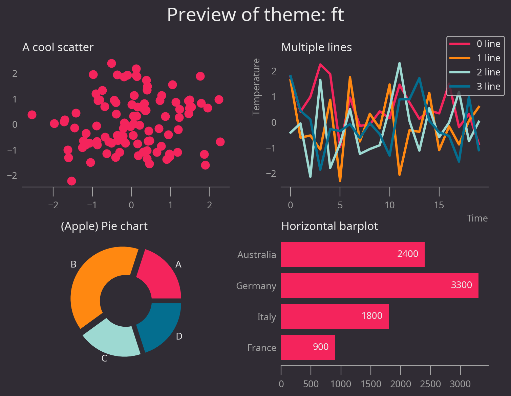

morethemes: more themes for matplotlib

morethemes provides themes for
matplotlib. More themes, better plots, one
line of code.
Themes
morethemes offers 16 themes at the moment:

A refined, newspaper-style theme inspired by the Wall Street Journal.

A clean, professional theme featuring the Urbanist font and muted tones.

A pure, distraction-free theme with a simple monochrome palette.

A sophisticated, no-nonsense theme with a muted palette and strong typographic clarity, echoing the Financial Times' aesthetic.

A calming theme inspired by natural landscapes, with earthy tones and organic shapes.
A crisp, data-focused theme with subtle gridlines and sharp contrasts.
A sleek, dark-themed aesthetic with vibrant green accents, inspired by modern streaming interfaces. Designed for clarity and style, with bold typography and a focus on visual harmony.
Color-blind-friendly light theme with clear colors and soft background.
Color-blind-friendly dark theme with high contrast and soft tones for dark backgrounds.
A clean, modern theme inspired by the lighter aesthetic, perfect for technical charts.

A dark theme inspired by Visual Studio Code's dark mode.
A crisp, Arctic-inspired theme based on the Nord color palette with frosty blues and clean contrasts
A nostalgic theme inspired by vintage graphics and retro gaming.

A sleek, no-frills dark theme with high contrast and a modern feel
A bold, National Geographic-inspired theme with a warm yellow backdrop

Installation
Don't want to add morethemes as a dependency? You can either
browse the source
code
to find the rcParams, or use the mt.get_rcparams("theme_name")
function.